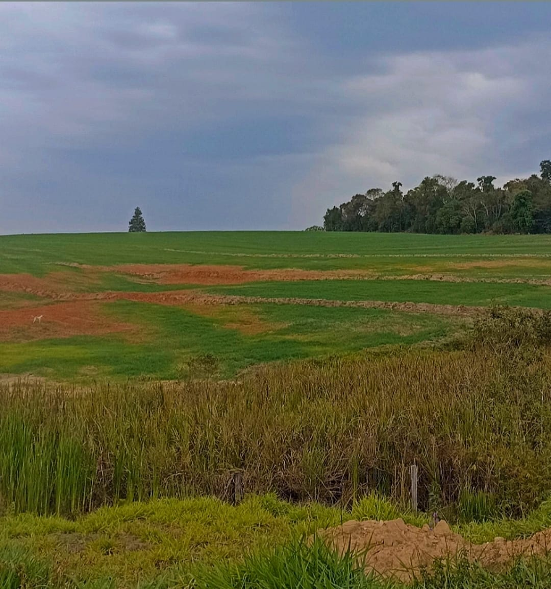
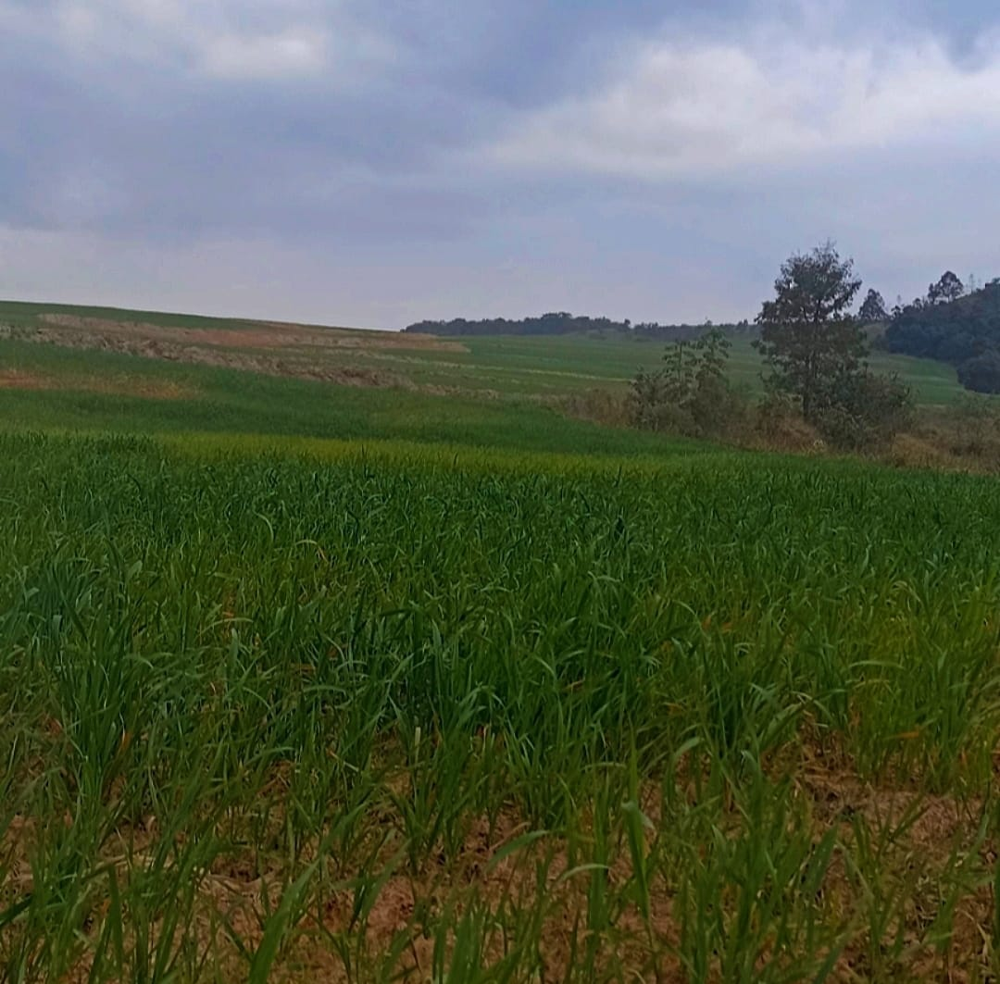

Tecnologia Agrícola: Inovações que Transformam o Campo A agricultura tem passado por uma revolução tecnológica sem precedentes, impulsionada pela necessidade de aumentar a produtividade e a sustentabilidade em um cenário de crescente demanda por alimentos. As inovações tecnológicas estão transformando práticas agrícolas tradicionais e oferecendo novas soluções para os desafios enfrentados pelos agricultores em todo o mundo.
Agricultura de Precisão A agricultura de precisão é uma abordagem que utiliza tecnologia avançada para monitorar e gerenciar a variabilidade no campo de forma mais eficaz. Por meio de sensores, sistemas de posicionamento global (GPS) e drones, os agricultores podem coletar dados precisos sobre o solo, as condições climáticas e a saúde das plantas. Essas informações permitem a aplicação localizada de insumos, como fertilizantes e pesticidas, reduzindo o desperdício e minimizando os impactos ambientais.
Internet das Coisas (IoT) A Internet das Coisas (IoT) desempenha um papel crucial na modernização da agricultura. Dispositivos conectados, como sensores de umidade do solo e estações meteorológicas automáticas, fornecem dados em tempo real que ajudam os agricultores a tomar decisões mais informadas. Com a IoT, é possível monitorar remotamente as condições do campo, automatizar sistemas de irrigação e até mesmo prever doenças nas culturas, melhorando a eficiência e reduzindo os custos operacionais.
Inteligência Artificial A inteligência artificial (IA) está sendo aplicada de várias maneiras no setor agrícola. Algoritmos de aprendizado de máquina analisam grandes volumes de dados para identificar padrões e prever tendências, auxiliando na tomada de decisões estratégicas. A IA é usada para otimizar a rotação de culturas, prever o rendimento das colheitas e detectar pragas e doenças precocemente. Além disso, robôs agrícolas equipados com IA podem realizar tarefas como plantio e colheita com alta precisão.
Inovações Recentes Nos últimos anos, várias inovações têm ganhado destaque no campo da tecnologia agrícola. Sistemas de agricultura vertical e cultivo hidropônico permitem a produção de alimentos em ambientes urbanos, economizando espaço e recursos. Biotecnologia e melhoramento genético estão desenvolvendo novas variedades de plantas mais resistentes a doenças e condições climáticas adversas. Além disso, plataformas digitais de gerenciamento agrícola estão facilitando o acesso a dados e conectando produtores a mercados globais.
Sustentabilidade Agrícola: Cultivando o Futuro de Forma Consciente A sustentabilidade agrícola é um conceito essencial para garantir que as práticas de cultivo atuais possam atender às necessidades da população mundial sem comprometer a capacidade das gerações futuras de satisfazer suas próprias necessidades. Ela envolve a implementação de métodos que preservam os recursos naturais, promovem a biodiversidade e apoiam o bem-estar econômico e social das comunidades agrícolas.
Práticas de Agricultura Sustentável A agricultura sustentável adota práticas que minimizam o impacto ambiental e melhoram a eficiência dos recursos. Algumas dessas práticas incluem: - *Rotação de Culturas:* Alternar diferentes tipos de culturas no mesmo local para melhorar a saúde do solo, reduzir pragas e aumentar a produtividade. - *Cultivo de Cobertura:* Plantar espécies que protegem e enriquecem o solo entre as safras principais, reduzindo a erosão e melhorando a fertilidade. - *Conservação do Solo:* Implementar técnicas como o plantio direto e a terraceamento para prevenir a erosão e manter a estrutura do solo.
Uso Eficiente dos Recursos A sustentabilidade agrícola busca maximizar o uso eficiente de recursos como água, energia e nutrientes. A irrigação por gotejamento, por exemplo, é uma técnica que reduz significativamente o consumo de água, aplicando-a diretamente nas raízes das plantas. Além disso, o uso de fertilizantes orgânicos e compostagem ajuda a manter a saúde do solo e a diminuir a dependência de insumos químicos.
Biodiversidade e Conservação Promover a biodiversidade é uma parte crucial da sustentabilidade agrícola. Sistemas agrícolas diversificados são mais resilientes a pragas e doenças, e a integração de culturas com árvores, como a agrofloresta, pode melhorar a saúde do ecossistema e aumentar a produtividade. A conservação de habitats naturais adjacentes às áreas agrícolas também ajuda a proteger a fauna e a flora locais.
Educação Alimentar: Compreendendo a Origem dos Alimentos e a Agricultura Urbana A educação alimentar é fundamental para promover a saúde, o bem-estar e a consciência sobre a importância de escolhas alimentares sustentáveis. Entender a origem dos alimentos e como eles chegam à nossa mesa é um passo importante para fazer escolhas mais conscientes e saudáveis. Além disso, a crescente popularidade da agricultura urbana está desempenhando um papel significativo na conexão das pessoas com suas fontes de alimentos.
A Origem dos Alimentos Compreender a origem dos alimentos envolve saber como eles são cultivados, colhidos, processados e distribuídos. Esta compreensão ajuda os consumidores a fazer escolhas informadas sobre o que comem e a reconhecer o impacto ambiental e social de suas escolhas alimentares. Incentivar o consumo de alimentos locais e sazonais pode reduzir a pegada de carbono associada ao transporte de alimentos e apoiar os agricultores locais. - *Alimentos Orgânicos:* São cultivados sem o uso de pesticidas e fertilizantes químicos, focando em práticas sustentáveis que preservam a saúde do solo e da biodiversidade. - *Alimentos de Origem Local:* Promover o consumo de alimentos produzidos localmente reduz as emissões de gases de efeito estufa associadas ao transporte e ajuda a fortalecer as economias regionais.
Agricultura Urbana A agricultura urbana está se tornando uma solução inovadora para aproximar os consumidores das suas fontes de alimentos, especialmente em áreas metropolitanas onde o espaço para a agricultura tradicional é limitado. Essa prática inclui o cultivo de alimentos em espaços urbanos, como telhados, varandas e terrenos baldios. - *Hortas Comunitárias:* As hortas comunitárias oferecem aos moradores urbanos a oportunidade de cultivar seus próprios alimentos, promovendo a segurança alimentar e o senso de comunidade. - *Cultivo Vertical:* O cultivo vertical utiliza tecnologias modernas para cultivar alimentos em camadas empilhadas verticalmente, economizando espaço e recursos. - *Hidroponia e Aquaponia:* Essas técnicas de cultivo sem solo permitem o crescimento eficiente de plantas em ambientes urbanos, utilizando menos água e sem a necessidade de grandes áreas de terra.
Benefícios da Educação Alimentar A educação alimentar proporciona vários benefícios, incluindo: - *Melhora da Saúde:* Incentivar dietas equilibradas e ricas em nutrientes pode ajudar a prevenir doenças crônicas e promover o bem-estar geral. - *Consciência Ambiental:* Compreender a relação entre alimentação e meio ambiente pode inspirar escolhas alimentares que são benéficas para o planeta. - *Empoderamento dos Consumidores:* Educar os consumidores sobre suas escolhas alimentares lhes dá o poder de influenciar positivamente o mercado e a produção de alimentos.
